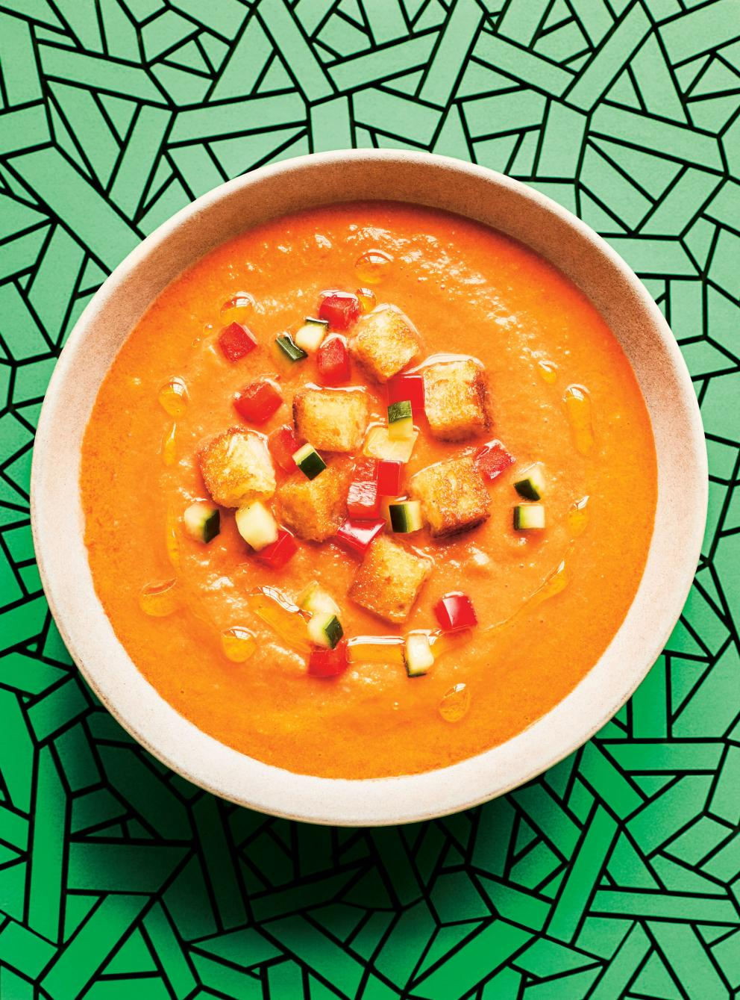

Gazpacho

Summer Soup
A hard to beat cold soup for those hot summer days.
Ingredients
Soup
- 1 1/2 cups crustless day-old country bread, cubed
- 1/2 cup water
- 2.2 lb very ripe tomatoes, blanched and roughly chopped
- 3/4 English cucumber, peeled, seeded and cubed
- 3/4 red pepper, seeded and cubed
- 2 green onions, cut into chunks
- 1/2 cup olive oil
- 2 tbsp sherry or red wine vinegar
Toppings
- 1 cup crustless day-old country bread, diced
- 1 tbsp olive oil, plus more for serving
- 1/4 English cucumber, peeled, seeded and cut into small dice
- 1/4 red pepper, seeded and cut into small dice
Directions
Soup
- In a bowl, soak the bread cubes in the water for 5 minutes.
- Transfer to a blender, add the remaining ingredients and purée until smooth.
- Season with salt and pepper.
- Refrigerate for 2 hours or until the soup is cold.
Toppings
- Meanwhile, in a large non-stick skillet over medium-high heat, brown the bread in the oil.
- Drain the croutons on paper towel and let cool.
- Ladle the gazpacho into bowl. Garnish with the croutons, cucumber and pepper. Drizzle with olive oil.